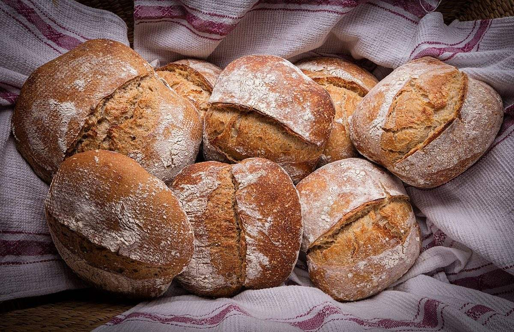

部位配置図
ハンドミキサー
の部位図
CRAFTBAKERS 下総中山店 ベーカリーカフェ
持ち手から混ぜる先端まで、六つの部位を番号つきで描いた配置図です。

全体図
持ち手からビーターまで
ハンドミキサーの側面の略図です。番号は下の部位一覧と対応しています。
部位一覧
六つの部位
- 1
グリップ
手で握って本体を支える持ち手。本体の上に弧を描いて渡してある。
- 2
速度スイッチ
回転の速さを段階で切り替える、スライド式のつまみ。
- 3
イジェクトボタン
押すとビーターが本体から外れる、小さなボタン。
- 4
ビーター
先端に付く二本の金属の輪。回りながらものを混ぜ、空気を含ませる。
- 5
差込口
ビーターの軸を差し込む、本体の下側にある二つの穴。
- 6
電源コード
本体の後ろから伸びる電気の線。先は壁のコンセントへつなぐ。
お店について
ベーカリーカフェです
所在地とInstagramのみ確認できています。営業時間・定休日・メニュー・価格・予約・駐車場は準備中です。



写真はフリー素材のイメージです。お店のものではありません。
写真帯(イメージ)

パンのイメージです。お店のものではありません。